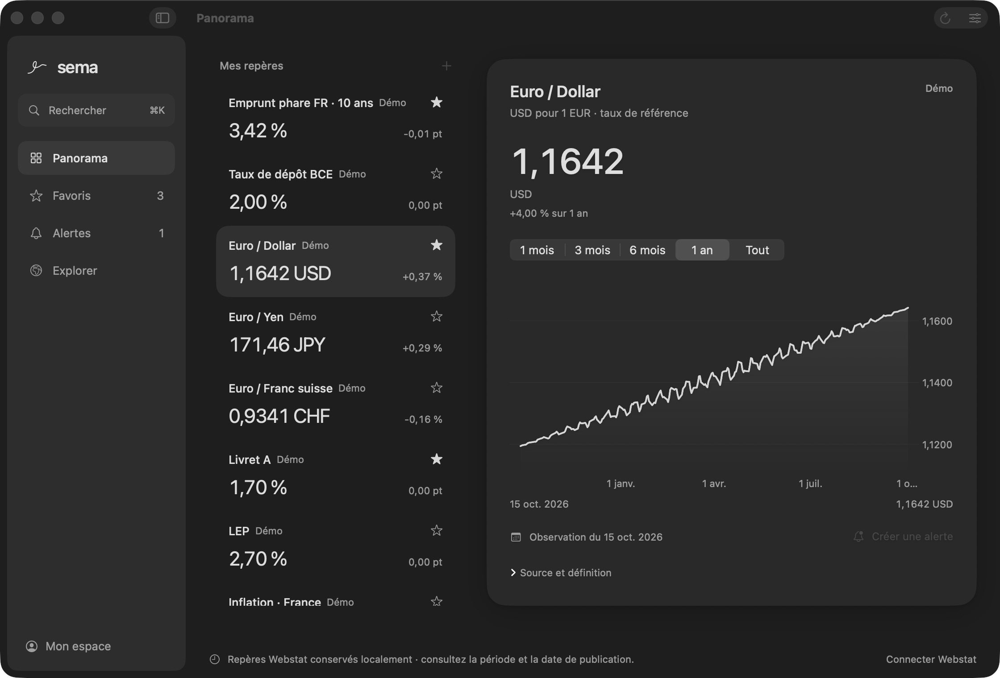

vos repères économiques. en un regard.
un clic dans la barre de menus du mac.
télécharger

quelques réponses.
quels repères peut-on suivre ?
taux, inflation, crédit, épargne, devises : composez votre sélection à partir des catalogues publics disponibles dans sema, dont webstat, le portail de la banque de france. chaque série conserve sa source, son unité et sa fréquence de publication. votre clé personnelle webstat reste dans le trousseau de votre mac.
comment fonctionnent les alertes ?
choisissez un repère et un seuil. sema vérifie le franchissement lorsque vous actualisez les données et peut vous envoyer une notification macos. la surveillance automatique en arrière-plan n’est pas encore disponible.
sur quels mac fonctionne sema ?
sur les mac avec puce apple, à partir de macos 14. la préversion est disponible en téléchargement ou avec homebrew. les étapes d’installation et de première ouverture sont expliquées sur la page de téléchargement.